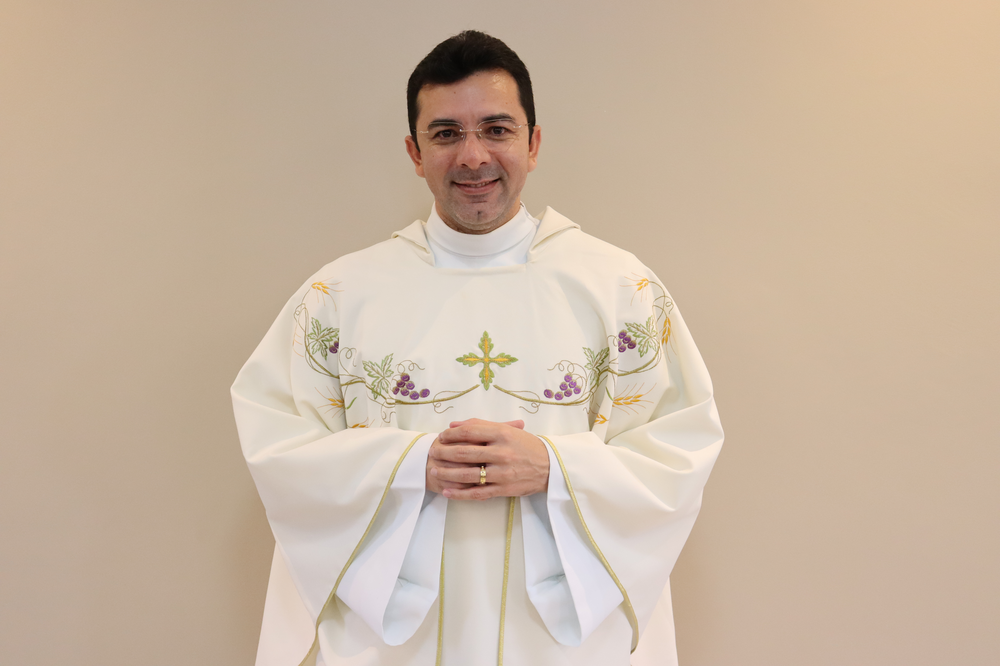
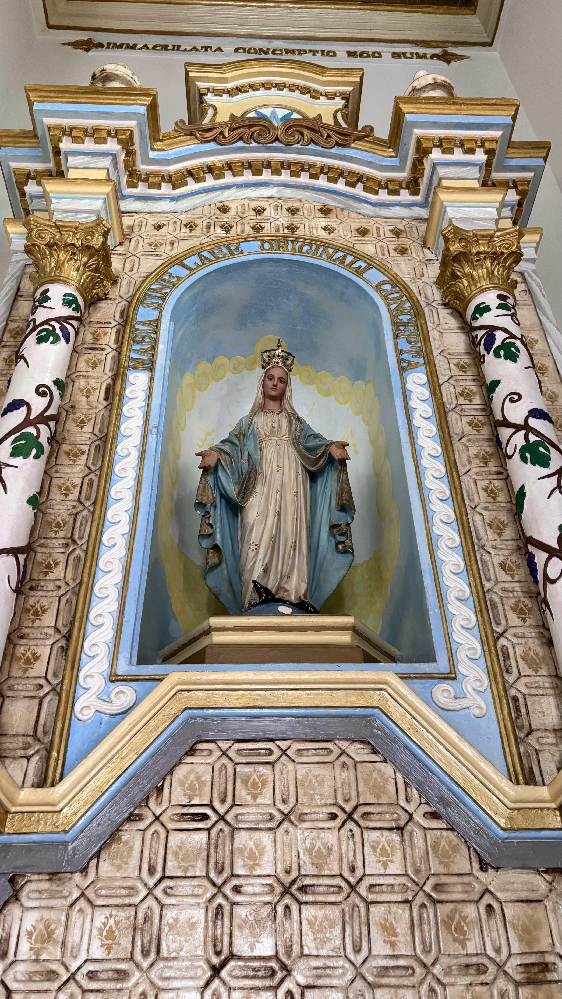
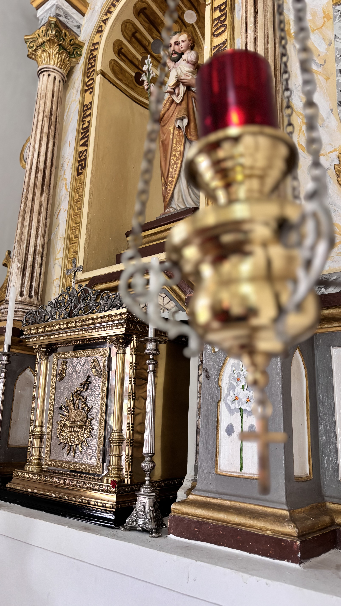
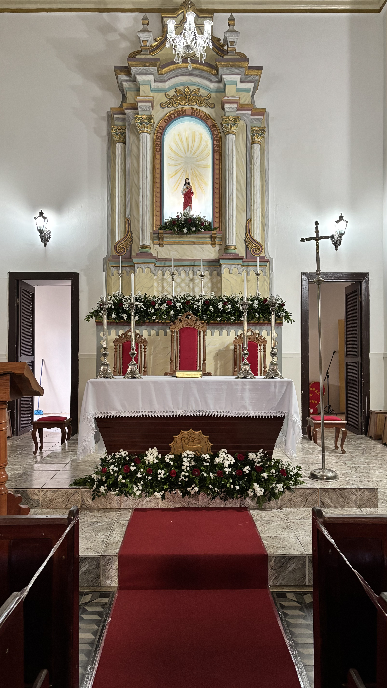
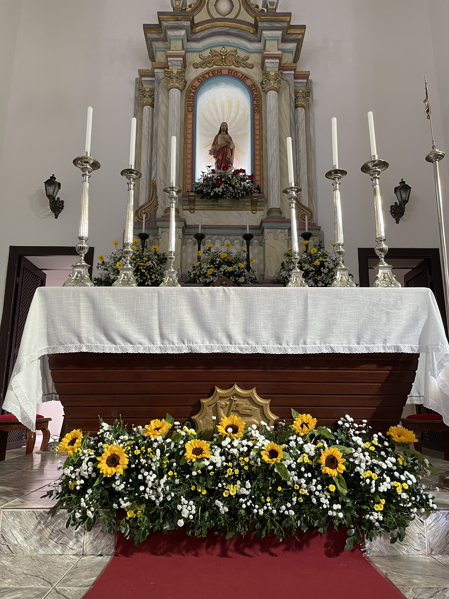
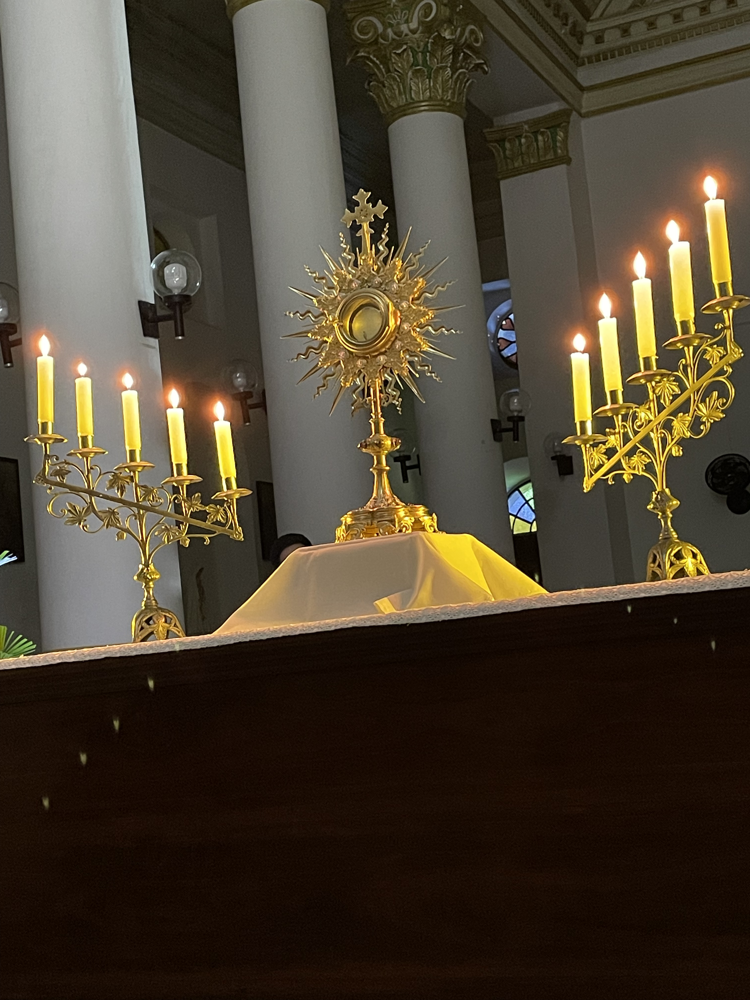

Sobre
A Pastoral da Comunicação de nossa paróquia tem como missão evangelizar através dos meios de comunicação modernos, levando a palavra de Deus a todos os cantos da nossa comunidade.
Missão
Servir à Igreja através dos meios de comunicação, promovendo a evangelização digital e fortalecendo os laços da comunidade católica.
Histórico
Conheça a rica história da nossa paróquia, que tem suas raízes profundas na fé e tradição católica de nossa comunidade.
Horários das Missas
- Quarta-feira: 19h
- Domingo: 8h e 19h
- Quinta-feira: 19h – Adoração ao Santíssimo
- Missa das Crianças: 15h – 2º Domingo
Paróquia Sagrado Coração de Jesus
Criação: 02-10-1900
A história da paróquia do Sagrado Coração de Jesus, em Serraria-PB, nasceu da fé em Deus e com o poder dos senhores de engenho. A criação da Paróquia Sagrado coração de Jesus acompanha o processo histórico de criação do município, que na ocasião era conhecido como Villa de Serraria (conforme relata o livro de Tombo de nossa Paróquia) devido seu primeiro estabelecimento ter sido uma serralharia erguida onde, atualmente está situada a Igreja Matriz.
Primeiros eventos ocorridos na paróquia:
- 1906 – Primeira pastoral do Bispo D. Adauto em Serraria; bênção da Matriz e a definitiva transferência da Sede paroquial;
- 1925 – Foi importado da Alemanha 5.000#000 (cinco mil réis) para instalação do relógio, doados pelo Major Antonio Bento Duarte dos Santos;
- 1950 – Tríduo das vocações sacerdotais; e ordenação de Padre Manoel Batista. A primeira no município;
- 1967 – Destruição dos Quatro altares laterais e o altar-Mor, retirado do coro lateral e a escada retirados pelo Pe. José Paulino.
- 02-10-1900 – João Cavalcante de Albuquerque Maranhão
- 13-04-1913 – Manoel Cristovam Ribeiro Ventura
- 20-06-1913 – Antonio Francisco de Barros Ramalho
- 02-03-1919 – Jorge Borges Sales
- 04-02-1923 – Gentil de Barros Moreira
- 03-02-1928 – Cônego Pedro Cardoso
- 03-03-1941 – Antonio Costa
- 12-09-1943 – Cônego José Betânio de Gouveia Nóbrega
- 16-01-1944 – Edgar Toscano
- 06-03-1946 – Cônego Theodomiro de Queirós
- 23-01-1949 – Cornélio Farias Belo
- 05-08-1960 – Hidelbrando Rodrigues de Oliveira
- 09-11-1962 – Aloísio Catão Torquato
- 26-03-1967 – José Paulino Batista
- 01-01-1968 – João Maria Cauchi
- 23-06-1968 – Conrado Wynannds
- 17-04-1994 – Severino Marques de Farias
- 07-04-2002 – Frei Domingos Fragoso
- 21-02-2005 – Dom Epaminondas José de Araújo
- 27-08-2006 – Bernardo Alves da Silva
- 10-02-2008 – João Batista da Silva
- 20-02-2015 – Pedro Alexandre da Silva
- 09-11-2016 – Iran de Sousa Ferreira
- 17-07-2019 – Paulo Roberto da Silva
- 21-12-2021 – Paulo José de Lima
- 29-06-2025 – Heriberto Gomes da Costa
Pe. Heriberto Gomes da Costa

Galeria




